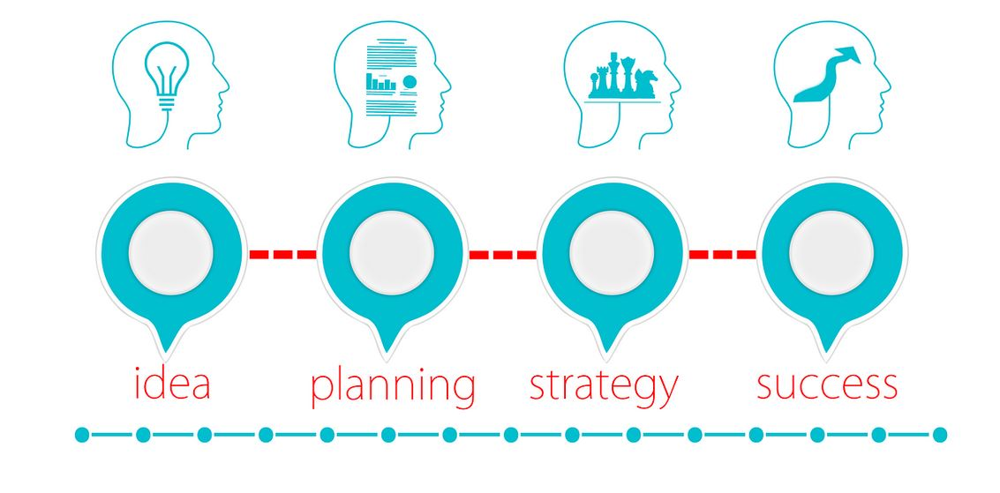
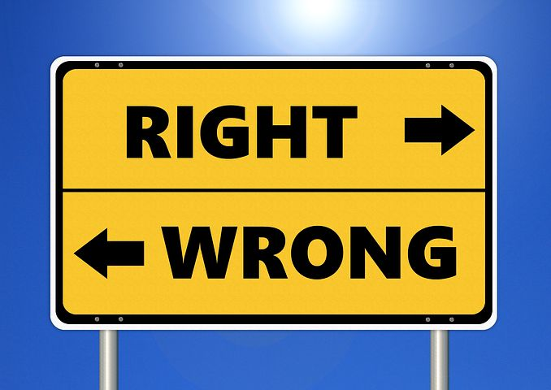
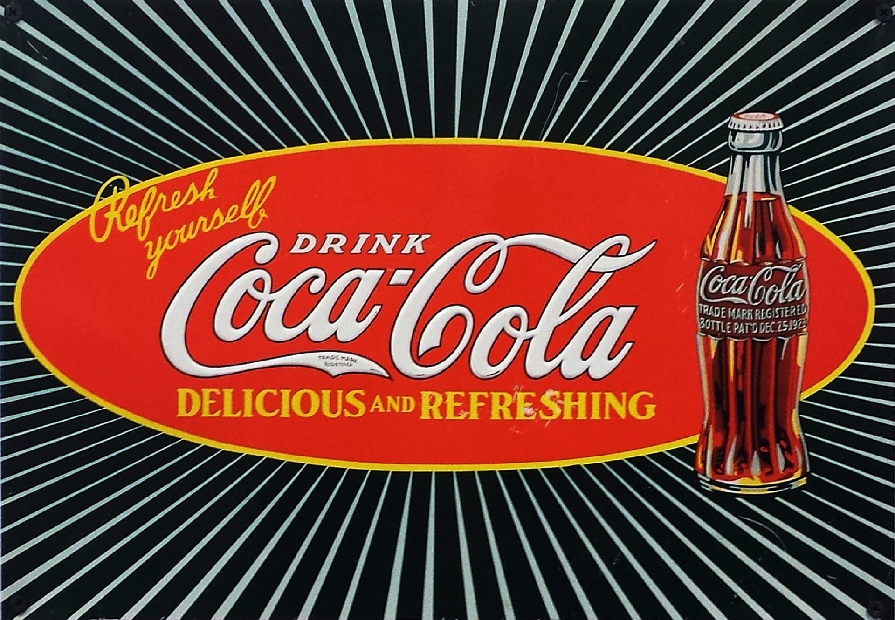
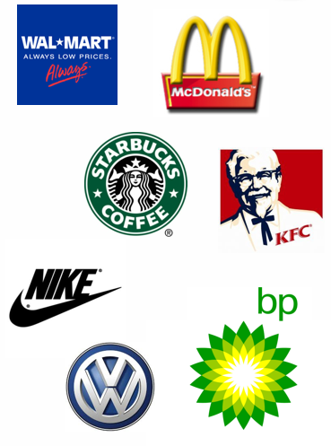

IB Docs (2) Team
IB Docs (2) Team

Common business objectives

"Unless you dream, you’re not going to achieve anything.”
- Sir Richard Branson (b.1950), Founder of the Virgin Group
"Your time is limited, so don't waste it living someone else's life. Don't be trapped by dogma which is living with the results of other people's thinking. Don't let the noise of others' opinions drown out your own inner voice. And most important, have the courage to follow your heart and intuition. They somehow already know what you truly want to become. Everything else is secondary."
- Steve Jobs (1955 - 2011), Co-founder of Apple
Business objectives (or simply objectives) are the clearly defined and measurable targets of an organization, used to to achieve its overall goals. Examples include "to generate greater shareholder value by targeting new market segments" or "to achieve sales growth of $500 million in the Asia Pacific region in 2022”.
Business objectives are essential for all businesses so that people know where they are striving to go or what they are trying to accomplish. They give people a sense of common purpose, thus promote a greater sense of belonging and team spirit (cohesiveness). They also enable managers and entrepreneurs to measure progress towards to their stated vision or mission statement.
They are often based on the Peter Drucker’s SMART objectives acronym: Specific, Measurable, Agreed, Realistic, and Time specific. An example of a SMART objective for a multinational company might be "to achieve sales of €10 million in European markets by 2023."
Alternatives for the 'A' and 'R' in SMART are: specific, measurable, achievable, relevant and time-related.
To achieve sales of growth of €10 million in European markets by 2023 is a SMART objective because:
It is specific - to achieve sales to grow by €10 million in European markets by 2023.
It is measurable - to achieve sales growth of €10 million in European markets by 2023.
It is achievable - if this objective is for a large multinational company, striving to achieve sales growth of €10 million may be realistically achievable.
It is relevant - for a large multinational company operating in European markets, this objective is clearly relevant.
Time bound - the objective is to achieve this amount of money by the end of 2023.
Objectives can be long-term (strategic objectives) or short-term (tactical objectives).
Tactical objectives are easier to change or reverse than strategic objectives. They are specific targets with definitive timelines.
Strategic objectives are targets that the whole organization is striving to achieve. It require a greater investment in human and financial resources than tactical and operational objectives. It is often related to what the owners of the business want to focus on, such as business survival, growth, or profit maximization.
Like vision and mission statements, business objectives can give employees and managers a genuine sense of direction (and purpose). Hence, they can help to motivate employees and raise labour productivity.
Business objectives are essential in all organizations so that people know where they are striving to go or what they are trying to accomplish.
- They give people a sense of common purpose, thus promote a greater sense of belonging and team spirit (cohesiveness).
Business objectives also enable organizations to measure progress towards to their stated goals and targets.
Top tip!
It can be useful for students (both SL and HL) to learn this topic prior to starting their Internal Assessment. This is because an organization's vision, mission, and objectives form the foundation for decision making and business strategy. Everything a business does and strives to achieve evolves around its vision, mission, and organizational objectives.
ATL Activity 1 (Research skills) - TNT
Using real-world examples in a critical part of the IB conceptual framework and curriculum model for the Business Management course (see page 6 of the IB guide).
Ask students to investigate the mission statement and SMART objectives of TNT, the global logistics company. You can use this link as a starter. This also works well for the content covered in Unit 5.6 Production planning (HL only) - the local and global supply chain process (AO2).
Organizations will have varying objectives. For example, public sector organizations, charities and cooperatives will not primarily strive for profit maximization, whereas private sector firms are likely to do so. Organizational objectives also change due to changes in the external business environment.
The syllabus states the following four common business objectives:
Growth
Profit
Protecting shareholder value
Ethical objectives
These are the only four business objectives that can be examined. In reality, there are other common business objectives too, of course.
Examples of organizational objectives include:
- Being environmentally friendly
- Customer loyalty / Brand loyalty
- Customer satisfaction
- Diversification
- Greater market share
- Improved competitiveness
- Improved corporate image / reputation
- Improved efficiency
- Improved quality
- Survival
As the previous guide did not specify which business objectives needed to be taught in Unit 1.3, please make sure students from 2022 only learn the four specified in the guide: (i) growth, (ii) profit, (iii) protecting shareholder value, and (iv) ethical objectives.
The CEO is responsible for protecting shareholder value
A company is owned by its shareholders. Protecting shareholder value is about safeguarding the interests of the owners of a limited liability company (one owned by shareholders either as a private or publicly traded company). Protecting shareholder value is ultimately the responsibility of the company's chief executive officer (CEO) and board of directors, based on their strategic plans to earn a healthy return on the capital invested in the business.
Free market economists argue that above all else, businesses exist to protect the interests of their owners. For example, Milton Friedman's (1912 - 2006) Shareholder Value Theory, states that "The business of business is... business", that is, leave businesses to get on with what they do best - business. Beyond that, said Friedman, businesses should not concern themselves with corporate social responsibilities (CSR). It is not, according to this school of thought, for businesses to decide and take responsibility for the needs of society - so long as they operate within the law and the customs of the country(ies) in which they operate.
This view is supported by Jack Welch (former Chairman and CEO of GE - General Electric) who said: "Even in these uncertain times, every company should practise good corporate citizenship post op but they also need to face the reality that's you first have to make money before you can give it away."
Protecting shareholder value encompasses both short- and long-term objectives, including survival, profit, and growth in order to give owners a financial reward/return on their investments.
Survival - This is the most basic of all business objectives as nothing else matters if the business cannot survive. Every business must earn enough revenue to keep it operating or else it will collapse. A business cannot protecting shareholder value if it cannot survive, perhaps due to a prolonged economic recession or fierce competition from larger companies.
Profit - The profit motive provides a financial return for shareholders in the form of dividend payments. Most private sector, for-profit businesses have this as their main organizational objective in order to provide value for their owners.
Growth - Enlarging the business can help to increase sales revenues, profits, and customer loyalty. These combined benefits of business growth help to generate improved shareholder value over time.
Market share - Firms may aim to increase their market share (their sales revenue as a proportion of the entire market's sales revenue) in order to gain the benefits of being the market leader. These advantages include enhanced brand awareness, brand value, and brand loyalty, all of which help a company to protect the interests of their shareholders.
Ethical objectives and corporate social responsibility - For a business to remain relevant, profitable, and competitive, it is not enough to only sell more goods and services. Changing social attitudes and expectations mean that businesses have to operate in a socially acceptable and responsible way, such as ensuring business activities do not cause damage to the planet or people. Doing so can also improve the corporate image of the company. Only then, can the business generate and protect shareholder value in the long term.
ATL Activity 2 (Research skills) - Coronavirus and change
Key concept - Change
For any organization of your choice, investigate how the coronavirus pandemic (COVID-19) caused changes to its organizational objectives (such as protecting shareholder value and ethical objectives) as well as its business operations.
Be prepared to present your findings to the rest of the class.
Encourage students to consider possible positive changes, rather than just the negative impacts or changes on the organization - some businesses have managed to thrive during/since the global pandemic.
If some students find this too challenging, suggest to them that they can refer to their IB World School as an example of an organization affected by the coronavirus pandemic.
Some examples that students could investigate include:
A record high of over 44 million people registered as unemployed in the USA in June 2020.
Oil giant BP announcing 10,000 job cuts following the global slump in demand for oil (as people were stuck at home due to lockdown laws in most parts of the world. This represented job losses for 15% of BP's global workforce.
Rolls-Royce announced 9,000 job cuts around the world due to the global decline in air travel, hurting demand for its jet engines and maintenance services.
According to analysis from the New Economics Foundation (NEF), the coronavirus pandemic could cause up to 124,000 job losses in the UK aviation industry without direct government support.
Frankie & Benny's (a bar and grill restaurant chain owned by the Wagamama group) closed 125 restaurants in the UK, causing 3,000 people to lose their jobs.
Airbus cut 15,000 jobs, mainly in Germany and France due to the decline in demand for its aeroplanes as a result of the stagnant air travel industry. The European aircraft manufacturer had previously furloughed 3,200 workers due to a cash flow crisis. Read more about this story here, from the BBC. Commercial air travel did not resume until July 2020, and much later in other parts of the world.
Data from the Australian Bureau of Statistics (ABS) showed that Australia went into a recession for the first time in almost 30 years. Retail sales in the country fell by US$5.38 billion between March to April 2020, causing unemployment across the economy in every sector. The coronavirus crisis was to blame.
Key concept - Creativity
What is the role of creativity in protecting shareholder value?
Business Management Toolkit
Examine how Ansoff’s matrix can support decision making about common business objectives.
Business Management Toolkit (HL only)
With reference to BMT 11 - Hofstede's cultural dimensions, discuss:
how the model can help managers of multinational companies to protect shareholder value.
whether long-term or short-term orientation is more important for protecting shareholder value.
 | "The one responsibility of business towards society is the maximisation of profits to shareholders within the legal framework and the ethical custom of the country." “Educating the mind without educating the heart is no education at all.” |
Starter Activity - An ethical dilemma?
You are driving along in your two-seater sports car on a cold, wet, and stormy night.
You pass by a bus stop, and you see three people waiting for the bus:
1. An old lady who looks as if she is about to die.
2. An old friend who once saved your life.
3. The perfect partner you have been dreaming about.
Which one would you choose to offer a ride to, knowing that there can only be one passenger in your two-seater sports car? And why?
Think carefully before you continue reading ...
This is a moral/ethical dilemma that was once actually used as part of a job application for management trainees at the multinational retailer Marks & Spencer. The task was intended to be used to judge the cognitive thinking of the applicants in a customer-focused business.
You could pick up the old lady, because she is going to die, and thus you could save her life. This suggests the job applicant is focused on customer care.
Or you could take the old friend because he once saved your life, and this would be the perfect chance to pay him back. Choosing this option suggests loyalty.
However, you may never be able to find your perfect dream partner again... this option might suggest the applicant is a motivated and driven manager who sets out to achieve his/her goals.
The story goes that the candidate who was hired (out of over 2,000 applicants) had no trouble coming up with an answer.
He simply answered:
"I would give the car keys to my old friend, and let him take the lady to the hospital. Then I would stay behind and wait for the bus with the woman of my dreams."
Sometimes, we gain more if we are able to give up our stubborn thought limitations and act for the greater good.
Ethics are, essentially, about what is deemed to be right and what is considered to be wrong, i.e. morality from society's point of view. They are based on the values of the organization, in accordance to society’s norms and beliefs. Read more about ethics as a key concept here.
Business ethics are the guiding principles that provide moral guidelines for the conduct of business activities. Ethical objectives are organizational goals based on moral guidelines in order to influence or determine business decision-making. Ethical decision-making considers more than just calculating costs, benefits and profits. This means such businesses act morally towards their various stakeholder groups, including employees, managers, customers, shareholders, suppliers, financiers, local community (including consideration for the natural environment), the government, and even competitors.
Examples of ethical objectives include:
improving the overall wellbeing of workers
honesty and fair treatment with regards to dealings with customers and suppliers
adopting green (clean / renewable) technologies
pursuing sustainable growth strategies
observing and respecting intellectual property rights of others
using socially responsible advertising, and corporate governance (such as financial integrity and transparency).
As part of its corporate social reasonability (CSR) strategy, businesses may establish an ethical code of practice - a formal documented policy setting out the way the business believes it should behave, including how to respond to situations that challenge its integrity or social responsibility or accusations/situations of unethical business practices.
Read more about developing an ethical code of practice by clicking the icon below.
The importance of an ethical code of practice in business organizations
Typically, a business organization faces pressures to act ethically from internal and external factors. For example, employees may demand better terms and conditions of employment, such as more opportunities for professional development and progression, whilst customers demand integrity and transparency (as they do not want to be associated with any business that earns profit through immoral or illegal activities).
Due to the ever-growing awareness of ethical business practices and corporate social responsibility (CSR) in the corporate world, a larger number of businesses have chosen to adopt an ethical code of practice in order to achieve their ethical objectives. The ethical code of practice is a formal document produced by the business which sets out the ways it believes its employees, and managers should behave in order to act ethically. For example, there should be guidelines about how to respond to situations such as bribery, discrimination, and/or exploitation in the workplace, that do not align with society's views on ethics, integrity, and social responsibilities. The ethical code of practice is usually published in the annual reports and often on company websites.
Note that an ethical code of practice is not a legal requirement but provides a framework for how a business should operate in order to fulfil its CSR goals and ethical objectives. However, it does provide clear details and guidelines on the organization's rules and policies on expected behaviour and practices, as well as how business decisions are taken. To work effectively, the ethical code of practice must be followed by all employees, manager, and directors as it provides a framework for consistency and uniformity across the organization.
Also note that values and principles of each organization may differ (as there is no legal requirement for businesses to have an ethical code of practice). Furthermore, moral values and ethical objectives are different in different part of the world; what is morally acceptable or expected in one country is not necessarily the case in others. Therefore, different businesses will have their own ethical codes of practice, although the guiding principles of such written documents are the same.
Examples of unethical business practices include:
the exploitation of stakeholders (such as low-paid workers, child labour, suppliers being paid late, and poor delivery of services to customers)
misleading marketing gimmicks, including direct advertising aimed at young children
exploitation of the natural environmental and ecosystems, and
fraudulent business activities (such as financial deception).
There are both advantages and limitations of businesses pursuing ethical objectives.
Advantages of ethical business objectives
Pursuing ethical objectives is an ongoing and long-term journey for businesses. However, there can be substantial advantages from doing so. These interrelated benefits include:
Improved corporate image - Being known as an ethical business can help to enhance the corporate image and reputation of an organization. This can generate additional long-term gains for the business such as improved sales and consumer loyalty. By contrast, acting unethically (see ATL Activity 4 below) can certainly lead to negative publicity from the mass media, leading to serious damage to the organization’s reputation.
Higher sales revenue - Due to improvements in education and the growing use of social media platforms, customers tend to prefer to buy from businesses that act morally and have ethical goals. They do not tend to knowingly purchase products from businesses that cause significant harm to the natural environment or exploit child labour, for example. Hence, ethical businesses can gain from higher sales revenue in the long-term.
Increased customer loyalty - Similarly, customers are more likely to be loyal to businesses that look after their customers, employees, suppliers, and local communities. For example, customers are likely to prefer to be loyal to cosmetics companies that do not test their products on animals but actively take actions to protect the natural environment.
Reduced costs - Despite the costs of compliance, acting ethically can help a business to cut certain costs in the long-term. For example, acting in the best interest of the environment can help to reduce the costs of excessive packaging and waste.
Higher staff morale - Employees feel better working for a business that does the "right" things, from society's point of view, beyond just obeying the laws of the country. Higher staff morale also helps to improve labour productivity and the level of employee motivation.
Increased employee loyalty - Similarly, ethical business practices help to attract and retain highly motivated employees. In particular, highly qualified and skilled employees may not be willing to work for unethical businesses. Having a good corporate image and reputation for ethical business practices makes it significantly easier for organizations to attract, hire, and retain employees.
Avoiding fines and penalties - Acting unethically can result in lawsuits (legal action taken against the businesses) and expensive fines as well as other penalties imposed by the courts.
Ultimately, actively pursuing ethical business objectives can be beneficial for the organization's triple bottom line (people, planet, and profits).
Limitations of ethical business objectives
Pursuing ethical business objectives also have their limitations and can be challenging and expensive to accomplish. These limitations include:
Compliance costs - There are costs associated with implementing ethical behaviours and corporate social responsibility. These costs are potentially extremely high. For example, supermarkets have to spend more on purchasing organic fruits, vegetables, and meats rather than genetically modified produce. The costs of production are also higher for ensuring employees are paid fair wages rather that exploiting workers.
Higher prices - High compliance costs can lead prices having to be raised in order to maintain profit margins. Furthermore, rival businesses might not implement ethical objectives and could have lower costs as a result. This can reduce the price competitiveness of the business as it pursues its ethical objectives and corporate social responsibilities.
Lower profits - The compliance costs of acting ethically, such as the adoption of green technologies or the sourcing of fair trade raw materials, means higher production costs for the business and hence lower profitability. This would then lead to lower dividend payments made to shareholder or business owners.
Subjectivity - The notion and concept of ethics is subjective. People and businesses in different parts of the world may have varying views about what is and what is not considered ethical behaviour (refer to BMT 11 - Hofstede's cultural dimension).
Stakeholder conflict - Although customer might prefer to purchase from businesses with ethical objectives and employees might prefer to work for ethical business, the directors and owners of the business might not be so keen due to some of the disadvantages outlined above. Many for-profit organizations aim to profit maximize in order to meet the needs of their shareholders and financiers or investors. Shareholders may be reluctant to accept lower profits, at least in the short term. Hence, this can put pressure on managers to pursue other business objectives other ethical objectives and CSR practices.
Overall, there is an ethical dilemma for managers if higher compliance costs resulting from ethical business activities cannot be covered by higher prices which customers are willing and able to pay for. Decision makers will need to decide whether they can accept adopting ethical practices with the potential risk of lower profitability, at least in the short-term.
Case Study 1 - The Coca-Cola Company

Coca-Cola is the world’s most successful consumer drinks company, with over $40 billion in sales revenue (which equates to $109,589,041 every day of the year!). However, this also means the company is the planet’s largest plastic polluter. Although the multinational giant is often associated with fuelling child obesity, the company is increasingly being linked with plastic waste and pollution, with over 100 billion plastic bottles produced each year – that’s the equivalent of 273,972,602 plastic bottles every single day of the year!
In response to negative media exposure, the company’s global chief executive, James Quincey, stated that the Coca-Cola Company aims to recover every plastic bottle that the company sells, and to use 50% of this for new bottles, by 2030. The company also announced that it would replace the plastic shrink wraps used in multipacks with 100% recyclable cardboard.
Source: adapted from BBC News
Case Study 2 - Theranos
Theranos was an American privately held company that claimed to have invented breakthrough health technologies that could detect diseases using only one drop of blood. The company was founded by 19-year old Elizabeth Holmes in 2003, raising more than $600 million from venture capitalists and private investors. In 2014, the company was valued at $9 billion.
By 2016, Theranos was forced to shut down after an investigation showed major flaws in the firm's technologies that generated widespread inaccurate results. In 2018, Elizabeth Holmes was charged with "massive fraud" by government authorities.
Watch the feature-length documentary of the Theranos disaster story here.
Click the icon below for a list of questions to accompany the video.
Questions
What was Elizabeth Holmes's goal in life from childhood?
At what age did Elizabeth Holmes drop out of Stanford University to start her own company?
How much did Elizabeth Holmes receive as a seed investment, from a neighbour?
By the end of the year, how much had Elizabeth Holmes acquired in funding?
In which year did Theranos develop its first prototype, Theranos 1.0?
Which other large company conducted Theranos tests on cancer patients?
How did Elizabeth Holmes approve the trialling of her products?
Who was Avie Tevanian?
What did a member of the sales team discover that the financial projections were based on?
How long did it take for all former employees of Apple to leave Theranos?
How much did Richard Fuisz sell his demonstration video company for?
How much had Safeway invested in accommodating shelf space for Theranos products by 2012?
What was the pay of the lawyer hired by Richard Fuisz?
Who was Angela Ha?
For how long did Theranos operate without a CFO (chief financial officer? 14:45
Who is Rupert Murdoch?
Which magazine released a front page cover featuring Elizabeth Holmes with the title "This CEO is out for blood"?
Following a visit from the FDA, how many tests did the Edison blood testing machine perform correctly, out of 250 tests?
How much did Walgreens sue Theranos for?
When was Theranos dissolved?
Answers
Timings included for reference only
1. What was Elizabeth Holmes's goal in life from childhood? 1:31
To become a billionaire
2. At what age did Elizabeth Holmes drop out of Stanford University to start her own company? 2:18
19
3. How much did Elizabeth Holmes receive as a seed investment, from a neighbour? 2:33
$1 million
4. By the end of the year, how much had Elizabeth Holmes acquired in funding? 3:15
$6 million
5. In which year did Theranos develop its first prototype, Theranos 1.0? 5:07
2006
6. Which other large company conducted Theranos tests on cancer patients? 5:51
Pfizer
7. How did Elizabeth Holmes approve the trialling of her products? 6:21
Lying to investors and clients about the product's effectiveness
8. Who was Avie Tevanian? 7:14
The former Senior Vice President of Software at Apple
9. What did a member of the sales team discover that the financial projections were based on? 8:37
Dishonest pilot tests
10. How long did it take for all former employees of Apple to leave Theranos? 9:09
A couple of years
11. How much did Dr. Richard Fuisz sell his demonstration video company for? 9:25
$50 million
12. How much had Safeway invested in accommodating shelf space for Theranos products by 2012? 12:10
$350 million
13. What was the pay of the lawyer hired by Richard Fuisz? 13:07
$1,000 an hour
14. Who was Angela Ha? 14:28
The Software Product Manager for Theranos
15. For how long did Theranos operate without a CFO (chief financial officer? 14:45
7 years
16. Who is Rupert Murdoch? 18:23
The owner of The Wall Street Journal (who invested $125 million in Theranos)
17. Which magazine released a front page cover featuring Elizabeth Holmes with the title "This CEO is out for blood"? 16:41
Fortune
18. Following a visit from the FDA, how many tests did the Edison blood testing machine perform correctly, out of 250 tests? 20:32
Only 12
19. How much did Walgreens sue Theranos for? 20:54
$140 million
20. When was Theranos dissolved? 22:46
September 2018
ATL Activity 3 (Communication skills) - Ethical or Unethical, that is the question
Recommended time: 20 minutes
In groups of 2 - 4 students, debate whether you feel the following business practices are ethical or unethical, and provide justified reasons for your arguments.
Charging customers premium prices at the cinema (theatre) for drinks, popcorn and other movie snacks.
Airlines charging customers higher prices for air travel during school holidays, such as Christmas or the summer break.
Using pesticides in agricultural food production (pesticides are the manufactured chemicals used to control weeds and insects that cause damage to farm crops).
Reducing portion sizes so as to avoid having to increase prices due to the rise in the cost of raw materials (a practice known as "shrinkflation").
Private fee-paying schools and universities choosing not to reduce tuition fees during nationwide closure of schools and universities due to the global Coronavirus pandemic in 2020.
ATL Activity 4 (Research skills) - Unethical business practices
Recommended time: 45 minutes
Is 'business ethics' an oxymoron? If the primary purpose of businesses is to generate profit for its owners, does this necessarily mean that they will operate in an ethical way. For example, businesses in many parts of the world sell counterfeit products (the illegal imitation of goods sold to customers), which is regarded as deceitful, dishonest and fraudulent.
Inquiry task
|  |
An example, the VW diesel scandal, is outlined below for illustrative purposes:
The VW diesel scandal
One of the worst cases of unethical business behaviour in the corporate world and motor vehicle industry is the Volkswagen diesel scandal. The German car maker - Europe's largest - had installed emissions software on more than 500,000 diesel cars in the USA and around 10.5 million more cars worldwide that allowed VW vehicles to pass environmental standards regulated by the USA’s Environmental Protection Agency (EPA).
In test mode, the VW vehicles were fully compliant with all of the EPA’s emissions levels. However, when driving these vehicles normally, it was discovered that the emissions from VW cars were actually up to 40 times higher than the government’s limit. Official estimates vary, but the VW diesel scandal has been reported to the car manufacture in the region of $35 billion in fines, and a tarnished brand name.
Key concept - Sustainability
Using real-world examples, discuss how ethical business objectives contributes to the sustainability of businesses.
Exam Practice Question
| (a) | Define the term ethical objectives. | [2 marks] |
| (b) | State two examples of ethical business objectives. | [2 marks] |
| (c) | Explain two reasons why an organization might choose to set ethical business objectives. | [4 marks] |
Answers
(a) Define the term ethical objectives. [2 marks]
Ethical objectives can be defined as the moral principles and values that underpin human behaviour in an organization, country, or region. Morals are concerned with that society deems to be 'right' or 'wrong'. Hence, ethical objectives are the moral principles that guide business behaviour.
Award [1 mark] for a definition that shows some understanding of the term ethical objectives.
Award [2 marks] for a clear definition that shows good understanding of the term ethical objectives, similar to the example above.
(b) State two examples of ethical business objectives. [2 marks]
Possible answers could include:
Ecological (environmental), social (cultural), and economic sustainability
The fair treatment of employees
High standard of health and safety in the workplace
Ethical accounting practices
The fair treatment of suppliers
Accept any other valid example
Award [1 mark] for each appropriate example given.
(b) Explain two reasons why an organization might choose to set ethical business objectives. [4 marks]
Possible reasons could include an explanation of:
Improved corporate image
Higher sales revenue
Increased customer loyalty
Reduced costs
Higher staff morale
Increased employee loyalty
Avoiding fines and penalties
Improved triple bottom line
Accept any other valid reason that is clearly explained
Mark as a 2 + 2
For each reason, award [1 mark] for a valid reason and an additional [1 mark] for a clear explanation.
Return to the Unit 1.3 - Business objectives homepage
Return to the Unit 1 - Introduction to Business Management homepage

 Twitter
Twitter
 Facebook
Facebook
 LinkedIn
LinkedIn